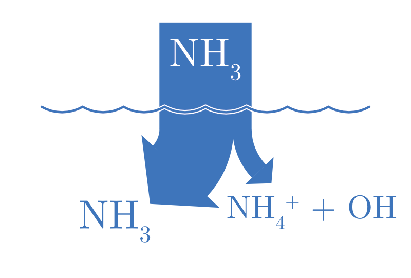

Chapitre 17 Les acides et les bases
- Définir les termes acide et base selon Arrhénius et Brønsted-Lowry.
- Définir le concept d’acides, bases et leurs conjugués.
- Expliquer la notion de forces des acides et des bases en termes de dissociation.
- Définir la constante d’acidité Ka et de basicité Kb.
- Expliquer la notion d’autoprotolyse de l’eau et la relation entre |H3O+| et |OH-|.
17.1 Définitions
17.1.1 Définition d’Arrhénius
Initialement, d’après le chimiste suédois Arrhénius, étaient considérés comme acides, les composés capables de libérer un cation H+ en solution aqueuse, et considérés comme bases, ceux capables de libérer un anion OH-.
- Acide : Substance qui libère des ions H+ en solution aqueuse.
- Base : Substance qui libère des ions OH- en solution aqueuse.
\[ \begin{split} & \text{Dissociation des acides :} \\ & \ce{HA -> H+ + A-} \\ & \ce{HNO3(aq) -> H+ + NO3-} \end{split} \qquad\qquad \begin{split} & \text{Dissociation des bases :} \\ & \ce{BOH -> OH- + B+} \\ & \ce{KOH(aq) -> K+ + OH-} \end{split} \]
Les ions H+ sont extrêmement réactifs et, en solution aqueuse, ils se lient toujours à des molécules d’eau pour former des ions hydronium H3O+. Les deux cations H+ et H3O+ ont donc la même signification. C’est pourquoi, pour simplifier l’écriture, nous écrirons parfois H+ à la place de H3O+.
17.1.2 Définition de Brønsted-Lowry
En 1923, au regard du transfert d’ions H+ qui a lieu lors d’une réaction acide-base, le chimiste anglais Thomas Lowry et le chimiste danois Joannes Brønsted énoncèrent une définition plus large :
- Acide : Un acide est un donneur de proton (ion H+)
- Base : Une base est un accepteur de proton (ion H+)
Il est utile de noter qu’un ion H+ est un atome d’hydrogène sans son électron, soit un simple proton.
Ainsi, HCl est un acide puisqu’il transfère un proton à l’eau :
\[ \ce{$\underset{\text{donneur de proton}}{\ce{HCl(aq)}}$ + $\underset{\text{accepteur de proton}}{\ce{H2O(l)}}$ -> H3O+ + Cl-} \]
Aussi NH3 est une base puisqu’elle accepte un proton provenant de l’eau :
\[ \ce{$\underset{\text{accepteur de proton}}{\ce{NH3(aq)}}$ + $\underset{\text{donneur de proton}}{\ce{H2O(l)}}$ -> NH4+ + OH-} \]
Selon la définition de Brønsted-Lowry, un acide et une base seront toujours présents simultanément.
On remarque que l’eau est capable de jouer à la fois le rôle d’acide et de base. Ce type de molécules est appelé ampholyte ou encore amphotère.
17.1.3 Définition de Lewis
Gilbert Lewis a proposé une troisième définition des acides et des bases, plus générique que les définitions d’Arrhenius ou de Brønsted-Lowry. Un acide de Lewis est une substance qui accepte une paire d’électrons. Une base de Lewis est une substance qui donne une paire d’électrons. Ainsi, une réaction acide-base de Lewis est représentée par le transfert d’une paire d’électrons d’une base à un acide.
Figure 17.1: Paire libre d’électrons partagée entre l’azote de l’ammoniac et un cation hydrogène
Le tableau ci-dessous résume les trois définitions acide-base.
| ACIDE | BASE | |
|---|---|---|
| Arrhénius | libère des ions H+ en solution | libère des ions OH- en solution |
| Brønsted-Lowry | donneur de H+ | accepteur de H+ |
| Lewis | accepteur d’une paire libre | donneur d’une paire libre |
Considérons maintenant la réaction suivante :
\[ \ce{NH4+(aq) + OH^{-}(aq) <=> NH_3(aq) + H_2O(l)} \]
Dans cette réaction, NH4+ donne un proton (acide) et OH- l’accepte (base). Il s’agit de la réaction inverse de l’équation où l’eau jouait le rôle de l’acide et NH3 de la base. NH3 et NH4+ sont donc reliés par le transfert d’un proton. On parle alors d’une paire base – acide conjugué. C’est le cas aussi pour H2O et OH- qui forment une paire acide – base conjuguée.
Figure 17.2: Acides, bases et leurs conjugués
Image tirée du livre : Principe de chimie de Nivaldo Tro
Pour chaque réaction et selon la définition de Brønsted-Lowry, déterminez l’acide, la base, l’acide conjugué et la base conjuguée.
- \(\ce{H2CO3(aq) + H2O(l) <=> H3O+(aq) + HCO3-(aq)}\)
- \(\ce{C5H5N(aq) + H2O(l) <=> OH-(aq) + C5H5NH+(aq)}\)
- \(\ce{CH3NH2(aq) + H2O(l) <=> CH3NH3+(aq) + OH-(aq)}\)
- \(\ce{HBr(aq) + H2O(l) <=> H3O+(aq) + Br-(aq)}\)
- \[ \ce{$\underset{\text{acide}}{\ce{H2CO3(aq)}}$ + $\underset{\text{base}}{\ce{H2O(l)}}$ <=> $\underset{\text{acide conjugué}}{\ce{H3O+(aq)}}$ + $\underset{\text{base conjuguée}}{\ce{HCO3-(aq)}}$} \]
- \[ \ce{$\underset{\text{base}}{\ce{C5H5N(aq)}}$ + $\underset{\text{acide}}{\ce{H2O(l)}}$ <=> $\underset{\text{base conjuguée}}{\ce{OH-(aq)}}$ + $\underset{\text{acide conjugué}}{\ce{C5H5NH+(aq)}}$} \]
- \[ \ce{$\underset{\text{base}}{\ce{CH3NH2(aq)}}$ + $\underset{\text{acide}}{\ce{H2O(l)}}$ <=> $\underset{\text{acide conjugué}}{\ce{CH3NH3+(aq)}}$ + $\underset{\text{base conjuguée}}{\ce{OH-(aq)}}$} \]
- \[ \ce{$\underset{\text{acide}}{\ce{HBr(aq)}}$ + $\underset{\text{base}}{\ce{H2O(l)}}$ <=> $\underset{\text{acide conjugué}}{\ce{H3O+(aq)}}$ + $\underset{\text{base conjuguée}}{\ce{Br-(aq)}}$} \]
Écrivez la formule de la base conjuguée de chaque acide suivant :
- \(\ce{HCl}\)
- \(\ce{H2SO3}\)
- \(\ce{CH3COOH}\)
- \(\ce{HF}\)
- \(\ce{Cl-}\)
- \(\ce{HSO3-}\)
- \(\ce{CH3COO-}\)
- \(\ce{F-}\)
Écrivez la formule de l’acide conjugué de chacune des bases suivantes :
- \(\ce{ClO4-}\)
- \(\ce{NH3}\)
- \(\ce{HSO4-}\)
- \(\ce{CO3^{2-}}\)
- \(\ce{HClO4}\)
- \(\ce{NH4+}\)
- \(\ce{H2SO4}\)
- \(\ce{HCO3-}\)
Donnez les équations montrant la nature acide et la nature basique d’une solution aqueuse des ampholytes suivants :
- \(\ce{H2PO4-}\)
- \(\ce{HCO3-}\)
- \[ \begin{split} \ce{$\underset{\text{acide}}{\ce{H2PO4-}}$ + H2O <=> HPO4^{2-} + H3O+} \\ \ce{$\underset{\text{base}}{\ce{H2PO4-}}$ + H2O <=> H3PO4 + OH-} \\ \end{split} \]
- \[ \begin{split} \ce{$\underset{\text{acide}}{\ce{HCO3-}}$ + H2O <=> CO3^{2-} + H3O+} \\ \ce{$\underset{\text{base}}{\ce{HCO3-}}$ + H2O <=> H2CO3 + OH-} \\ \end{split} \]
17.2 Forces des acides et des bases
La force d’un acide ou d’une base est déterminée par le degré de dissociation en ses ions constitutifs dans une solution.
- Un acide ou une base sera fort(e) s’il s’ionise (se dissocie) complètement.
- Un acide ou une base sera faible s’il ne s’ionise (se dissocie) que partiellement.
| ACIDE FORT | BASE FORTE |
|---|---|
| \(\ce{HA(aq) + H2O(l) -> H3O+(aq) + A^{-}(aq)}\) | \(\ce{B(aq) + H2O(l) -> BH+(aq) + OH^{-}(aq)}\) |
 |
|
| \(\ce{HCl}, \ce{HBr}, \ce{HI},\) | \(\ce{LiOH}, \ce{NaOH}, \ce{KOH},\) |
| \(\ce{HNO3}, \ce{HClO4}\) | \(\ce{Sr(OH)2}, \ce{Ca(OH)2}, \ce{Ba(OH)2}\) |
Avec une ionisation complète, il s’ensuit que pour un monoacide fort (particule capable de libérer un seul proton en solution), |H3O+| = Cacide. Il en va de même pour les bases fortes, |OH-| = Cbase.
| ACIDE FAIBLE | BASE FAIBLE |
|---|---|
| \(\ce{HA(aq) + H2O(l) <=> H3O+(aq) + A^{-}(aq)}\) | \(\ce{B(aq) + H2O(l) <=> BH+(aq) + OH^{-}(aq)}\) |
|  |
Dans le cas d’un acide faible partiellement ionisé : |HA| >>> |H3O+|. Dans le cas d’une base faible partiellement ionisé : |B| >>> |OH-|.
Il est à noter que plus un acide est fort, plus sa base conjuguée sera faible et vice versa. Dans le cas extrême d’un acide fort (comme HCl), sa base conjuguée est considérée comme inerte, car elle ne modifiera pas le pH.
De plus, de nombreuses bases faibles contiennent un atome d’azote puisque la paire libre peut agir comme un accepteur de proton.
Figure 17.3: Exemple de base faible azotée.
17.3 Constante d’acidité Ka et constante de basicité Kb
Reprenons l’équation d’ionisation d’un acide faible :
\[ \ce{HA(aq) + H2O(l) <=> H3O+(aq) + A^{-}(aq)} \]
Puisqu’il s’agit d’une réaction réversible, il est possible de donner la constante d’équilibre de cette réaction d’ionisation :
\[ K_a = \frac{|\ce{H3O+}| \cdot |\ce{A-}|}{|\ce{HA}|} = \frac{|\ce{H+}| \cdot |\ce{A-}|}{|\ce{HA}|} \]
Dans le cas des acides faibles, cette constante n’est rien d’autre que la constante d’acidité (Ka) qui quantifie la force de ces acides. Plus la constante est petite, plus l’équilibre est déplacé vers la gauche et donc plus l’acide est faible.
De manière similaire, reprenons l’équation d’ionisation d’une base faible :
\[ \ce{B(aq) + H2O(l) <=> BH+(aq) + OH^{-}(aq)} \]
Puisqu’il s’agit d’une réaction réversible, il est possible de donner la constante d’équilibre de cette réaction d’ionisation, qui n’est rien d’autre que la constante de basicité (Kb) :
\[ K_b = \frac{|\ce{BH+}| \cdot |\ce{OH-}|}{|\ce{B}|} = \frac{|\ce{H+}| \cdot |\ce{A-}|}{|\ce{HA}|} \]
A nouveau, plus la constante est petite, plus l’équilibre est déplacé vers la gauche et donc plus la base est faible.
Soit les deux acides suivants et leur constante d’acidité :
- \(\ce{HF}\), \(K_a = 3.5 \cdot 10^{-4}\)
- \(\ce{HClO}\), \(K_a = 2.9 \cdot 10^{-8}\)
Indiquez si la base conjuguée la plus forte est ou .
\[ \begin{split} \ce{HF} \Rightarrow \quad K_a = \frac{|\ce{H3O+}| \cdot |\ce{F-}|}{|\ce{HF}|} &= 3.5 \cdot 10^{-4} \\ \ce{HClO} \Rightarrow \quad K_a = \frac{|\ce{H3O+}| \cdot |\ce{ClO-}|}{|\ce{HClO}|} &= 2.9 \cdot 10^{-8} \lll 3.5 \cdot 10^{-4} \end{split} \] \(\ce{HClO}\) est un acide plus faible que \(\ce{HF}\) car \(\ce{HClO}\) s’ionise (se dissocie) très peu (|\(\ce{HClO}\)| élevée). Par conséquent, \(\ce{ClO-}\) sera une base conjuguée plus forte que \(\ce{F-}\).
Déterminez si chacun des composés ci-dessous est un acide ou une base fort(e) ou faible. Pour les acides ou les bases faibles, donnez également la constante Ka ou Kb :
- \(\ce{HNO3}\)
- \(\ce{Ca(OH)2}\)
- \(\ce{HClO4}\)
- \(\ce{HBr}\)
- \(\ce{CH3COOH}\)
- \(\ce{KOH}\)
- \(\ce{CO3^{2-}}\)
- \(\ce{H3PO4}\)
- \(\ce{HCO3-}\)
- \(\ce{HNO3}\) acide fort
- \(\ce{Ca(OH)2}\) base forte
- \(\ce{HClO4}\) acide fort
- \(\ce{HBr}\) acide fort
- \(\ce{CH3COOH}\) acide faible \(K_a = \frac{|\ce{CH3COO-}| \cdot |\ce{H3O+}|}{|\ce{CH3COOH}|}\)
- \(\ce{KOH}\) base forte
- \(\ce{CO3^{2-}}\) base faible \(K_b = \frac{|\ce{HCO3-}| \cdot |\ce{OH-}|}{|\ce{CO3^{2-}}|}\)
- \(\ce{H3PO4}\) acide faible \(K_a = \frac{|\ce{H2PO4-}| \cdot |\ce{H3O+}|}{|\ce{H3PO4}|}\)
- \(\ce{HCO3-}\) acide faible \(K_a = \frac{|\ce{CO3^{2-}}| \cdot |\ce{H3O+}|}{|\ce{HCO3-}|}\)
base faible \(K_b = \frac{|\ce{H2CO3}| \cdot |\ce{OH-}|}{|\ce{HCO3-}|}\)
Classez les solutions données par ordre croissant selon leur concentration en ion hydronium :
- \(\ce{HCl}\) 0.10 [mol/L]
- \(\ce{HF}\) 0.10 [mol/L]
- \(\ce{HClO}\) 0.10 [mol/L]
- \(\ce{CH3COOH}\) 0.10 [mol/L]
- \(\ce{HCl}\) 0.10 [mol/L] acide fort complètement ionisé (dissocié), |\(\ce{H3O+}\)| = 0.1 [M]
- \(\ce{HF}\) 0.10 [mol/L] \(K_{a1} = 3.5 \cdot 10^{-4}\)
- \(\ce{HClO}\) 0.10 [mol/L] \(K_{a2} = 2.9 \cdot 10^{-8}\)
- \(\ce{CH3COOH}\) 0.10 [mol/L] \(K_{a3} = 1.8 \cdot 10^{-5}\)
Plus le Ka est grand, plus la force de l’acide est élevée et donc plus il est ionisé (et plus |\(\ce{H3O+}\)| est élevée).
Classement par ordre croissant : \(\ce{HClO}\) < \(\ce{CH3COOH}\) < \(\ce{HF}\) < \(\ce{HCl}\)
Donnez la base la plus forte dans chacune des paires ci-dessous :
- \(\ce{NO3-}\) et \(\ce{Br-}\)
- \(\ce{NO2-}\) et \(\ce{NO3-}\)
- \(\ce{CN-}\) et \(\ce{ClO-}\)
- \(\ce{F-}\) et \(\ce{ClO2-}\)
- \(\ce{NO3-}\) et \(\ce{Br-}\) Bases inertes car provenant toutes deux d’acides forts.
- \(\ce{NO2-}\) et \(\ce{NO3-}\) \(\ce{NO2-}\) car \(\ce{NO3-}\) est inerte (ions spectateur).
- \(\ce{CN-}\) et \(\ce{ClO-}\) \(\ce{CN-}\) est plus forte que \(\ce{ClO-}\)
car \(K_b(\ce{CN-}) > K_b(\ce{ClO-})\) ou \(K_a(\ce{HCN}) < K_b(\ce{HClO})\) - \(\ce{F-}\) et \(\ce{ClO2-}\) \(\ce{F-}\) est une base plus forte que \(\ce{ClO2-}\)
(idem)
Indiquez si chacun des ions suivants est une base faible, un acide faible ou un ion inerte :
- \(\ce{NO3-}\)
- \(\ce{NO2-}\)
- \(\ce{Ca^{2+}}\)
- \(\ce{CH3NH3+}\)
- \(\ce{NO3-}\) inerte
- \(\ce{NO2-}\) base faible
- \(\ce{Ca^{2+}}\) inerte
- \(\ce{CH3NH3+}\) acide faible
17.4 Autoprotolyse de l’eau
Nous avons vu précédemment que l’eau était une molécule amphotère, c’est-à-dire qu’elle peut jouer à la fois le rôle d’acide et le rôle de base. Ainsi, même dans de l’eau pure, les molécules d’eau pourront réagir entre-elles :
\[ \ce{H2O(l) + H2O(l) <=> H3O+(aq) + OH^{-}(aq)} \]
Cette réaction est appelée autoprotolyse et est régie par la constante d’équilibre Ke, appelée produit ionique de l’eau :
\[ K_e = |\ce{H3O+}| \cdot |\ce{OH-}| = 10^{-14} \quad \text{(valeur à 25°C)} \]
Cette relation décrit le lien entre les concentrations de ces deux ions dans toutes les solutions aqueuses. Cette relation est aussi utile pour calculer la concentration des ions H3O+ dans une solution basique. En effet :
\[ |\ce{H3O+}| = \frac{10^{-14}}{|\ce{OH-}|} \]
En résumé :
| Dans de l’eau pure | \(|\ce{H3O+}| = |\ce{OH-}| = 10^{-7} [M]\) |
| Dans une solution acide | \(|\ce{H3O+}| > |\ce{OH-}|\) |
| Dans une solution basique | \(|\ce{H3O+}| < |\ce{OH-}|\) |
- Quelle est la concentration des ions H3O+ dans une solution d’acide nitrique 0.01 [M] ?
- Qu’en sera-t-il de la concentration en H3O+ dans une solution d’acide nitreux 0.01 [M] ? (une réponse qualitative suffit)
- \(\ce{HNO3}\) acide fort donc \(|\ce{H3O+}| = 0.01\ [M]\)
- \(\ce{HNO2}\) acide plus faible donc \(|\ce{H3O+}| < 0.01\ [M]\)
En considérant que les deux protons de l’acide sulfurique sont entièrement dissociés, quelle est la concentration des H3O+ et de OH- dans une solution d’acide sulfurique 0.005 [M].
\[ \begin{split} \ce{H2SO4 + 2 H2O <=> 2 H3O+ + SO4^{2-}} \end{split} \qquad \begin{split} C_{initial}^{\ce{H2SO4}} &= 0.005\ [M] \\[1em] C_{final}^{\ce{H2SO4}} &= 0\ [M] \end{split} \qquad \begin{split} C_{initial}^{\ce{H3O+}} &= 0\ [M] \\[1em] C_{final}^{\ce{H3O+}} &= 0.010\ [M] \end{split} \] \[ \begin{split} |\ce{H3O+}| = 10^{-2}\ [M] \end{split} \quad \text{et} \quad \begin{split} |\ce{OH-}| = \frac{10^{-14}}{10^{-2}} = 10^{-12}\ [M] \end{split} \]
Calculez la concentration des ions H3O+ dans une solution de LiOH 0.025 [M].
\[ \begin{split} &|\ce{OH-}| = 0.025\ [M] \\ &\text{LiOH est une base forte.} \end{split} \qquad \begin{split} |\ce{H3O+}| = \frac{K_e}{|\ce{OH-}|} = \frac{10^{-14}}{0.025} = 4 \cdot 10^{-12} [M] \end{split} \]